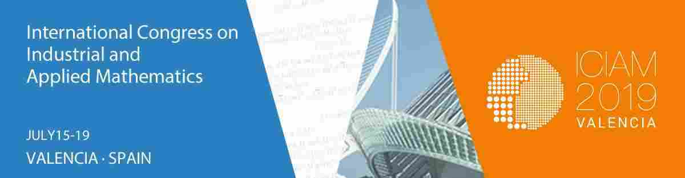

Estimados colegas,
ICIAM 2019 es ya parte de la historia de nuestra Sociedad.
En este Boletín encontraréis relatos de algunos miembros de la SEMA que asistieron al congreso, y en particular de M. Jesús Esteban, una socia con un papel muy especial en este evento. En ellos encontraréis ‘impresiones’, ‘vivencias’, ‘reflexiones personales’, ‘experiencias’,… La lectura de estos relatos me ha hecho sonreír en muchas ocasiones, como creo que hará sonreír a aquellos que pudisteis participar en el congreso, y me ha ayudado a recordar cómo se gestó y cómo transcurrió este acontecimiento singular, que ya no tengo ninguna duda de que ha marcado ‘un antes y un después’ en el devenir de nuestra Sociedad.
Pero, sobre todo, me ha hecho recordar el tremendo esfuerzo colectivo que este congreso ha supuesto para todos aquellos que hemos participado en las tareas de organización. No solo durante este último año sino también desde que, en 2013, la candidatura presentada por la SEMA salió elegida en la reunión del Board del ICIAM en Pekín, en una reñida competición con la candidatura presentada por el ECMI.
Mi perspectiva personal quizá se pueda resumir en dos palabras: unidad y cohesión. El congreso ha puesto de manifiesto todo lo que podemos alcanzar cuando trabajamos unidos, con un objetivo claro, convencidos de lo que queremos hacer y de que tenemos capacidad para hacerlo. Las dificultades siempre se solucionaron con rapidez porque hemos formado un colectivo cohesionado, en el que cada uno ha asumido un papel que ha desempeñado con seriedad y eficiencia.
La SEMA es una sociedad madura que ha demostrado estar preparada para afrontar nuevos retos y alcanzar otras metas que la hagan seguir creciendo y vertebrando un área científica en expansión y cada vez más relevante en una sociedad que está aprendiendo a conocerla y a valorarla.
Acabo estas palabras agradeciendo a los tres miembros salientes del Comité Ejecutivo de la SEMA, Juan Luis, Carlos e Isaac, el trabajo realizado durante los últimos seis años, y a los tres nuevos miembros elegidos en la última asamblea, Esther, María Luisa y Dani, su disposición a dedicar su tiempo y su esfuerzo a nuestra Sociedad. Por último, mi más sincero agradecimiento a Fernando, que comenzó su andadura como secretario de la SEMA al mismo tiempo que yo inicié mis tareas como presidenta, y que también ha renovado su cargo en la última asamblea. Gracias Fernando, no solo por el intenso trabajo que has realizado en estos tres últimos años, sino también por hacer más sencillo y llevadero el mío como presidenta.
Un cordial saludo,
| Rosa María Donat Beneito |
| Presidenta de la SEMA |
| Valencia, 3 de octubre de 2019 |
